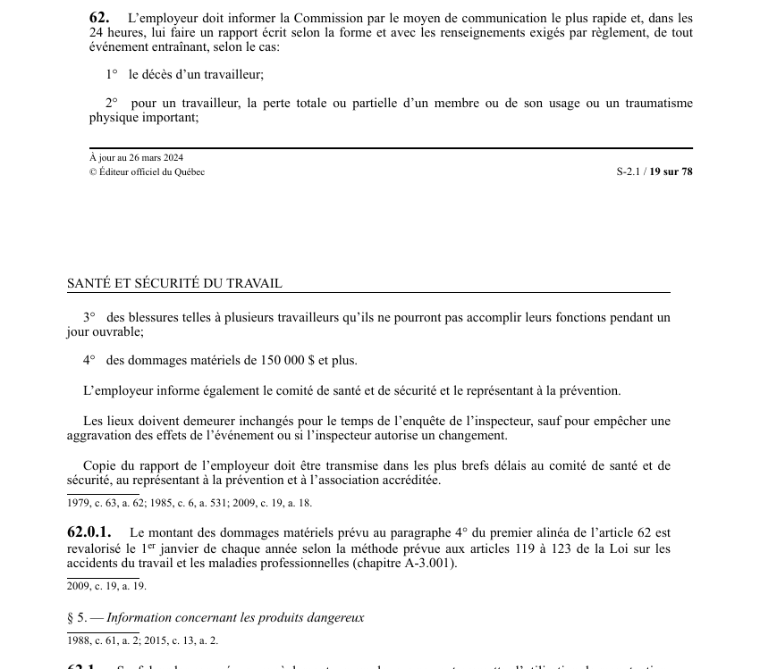

art-62-LSST : avis et rapport d'événement grave
Déclaration obligatoire des événements graves : double geste de l'employeur, alerter la Commission sans délai puis déposer un rapport écrit, le tout dans un délai unique de 24 heures.
Délai et forme : avis par le moyen de communication le plus rapide, puis rapport écrit dans les 24 heures, selon la forme et les renseignements exigés par règlement.
Quatre événements déclencheurs : le décès d'un travailleur ; pour un travailleur, la perte totale ou partielle d'un membre ou de son usage, ou un traumatisme physique important ; des blessures empêchant plusieurs travailleurs d'accomplir leurs fonctions pendant 1 jour ouvrable ; des dommages matériels de 150 000 $ et plus.
Le seuil de 150 000 $ est revalorisé le 1er janvier de chaque année selon la méthode d'indexation de la LATMP.
Diffusion interne : le comité de santé et de sécurité et le représentant à la prévention sont informés eux aussi, et une copie du rapport leur est transmise dans les plus brefs délais, de même qu'à l'association accréditée.
Gel des lieux : ils doivent demeurer inchangés pour la durée de l'enquête de l'inspecteur, sauf pour empêcher une aggravation des effets de l'événement ou si l'inspecteur autorise un changement.
Visé : employeur · Nature : obligation.
🌐 LegisQuébec · 📄 PDF officiel (page 19)
Texte officiel : capture du PDF
{kind=link}

Toucher l'image pour l'agrandir🔗 Ouvrir a cette page : LSST.pdf : page 19 · texte a jour au 26 mars 2024
Voir aussi
- art. 60 : transmission modification programme prévention · obligation : l'employeur doit transmettre au comité de santé et de sécurité et à la Commission le programme de prévention et ses mises à jour ; la Commission peut ordonner que le contenu soit modifié ou qu'un nouveau programme lui soit transmis dans le délai qu'elle détermine.
- art. 61 : diffusion programme prévention modifié · l'employeur transmet au comité de santé et de sécurité, à l'association accréditée, au représentant à la prévention, au médecin responsable et à l'association sectorielle une copie du programme de prévention tel que modifié suite à une ordonnance de la Commission.
- art. 62.1 : étiquetage formation produits dangereux · faculté : sauf dans les cas prévus par règlement, un employeur ne peut permettre l'utilisation, la manutention, le stockage ou l'entreposage d'un produit dangereux sur un lieu de travail à moins qu'il ne soit pourvu d'une étiquette.
- art. 62.2 : étiquetage des produits dangereux fabriqués · obligation : l'employeur qui fabrique un produit dangereux doit, dans les cas prévus par règlement, l'étiqueter ou l'identifier au moyen d'une affiche et élaborer une fiche de données de sécurité ; l'étiquette, l'affiche et la fiche doivent respecter les normes déterminées par règlement.
- 🔧 Modifié par : LMRSST · Article modificateur de la LMRSST.
- ↑ Loi : LSST
Pages qui pointent ici (28)
- 🎯 Démarrage rapide, direction et RH Droit du travail
- 🎯 Démarrage rapide, superviseur Droit du travail
- art-148-LMRSST : modifie l'art. 62 LSST Recueil législatif
- art-51-LSST Ergonomie
- art-51-LSST Hygiène industrielle
- art-51-LSST Toxicologie
- art-60-LSST : transmission du programme de prévention Recueil législatif
- art-61-LSST : diffusion du programme de prévention modifié Recueil législatif
- art-62-LSST Sécurité industrielle
- art-62.1-LSST : étiquette, fiche et formation obligatoires Recueil législatif
- art-62.2-LSST : étiquetage des produits dangereux fabriqués Recueil législatif
- Avis d'accident grave Recueil législatif
- Délais clés en SST québécoise Recueil législatif
- Démarche en cas de lésion Droit du travail
- Démarrage rapide - Conseiller SST Recueil législatif
- Index par profil Recueil législatif
- Infractions et sanctions SST Droit du travail
- LMRSST : Chapitre II : Modifications à la LSST Recueil législatif
- LSST Recueil législatif
- LSST : Chapitre IV : Programme de prévention Recueil législatif
- LSST, droits et obligations Droit du travail
- Obligations de l'employeur Droit du travail
- PDFs de jurisprudence et de doctrine Recueil législatif
- Procédures Recueil législatif
- Processus de réclamation CNESST Droit du travail
- Programme de prévention Recueil législatif
- Régime CNESST Droit du travail
- Règlement premiers secours Recueil législatif